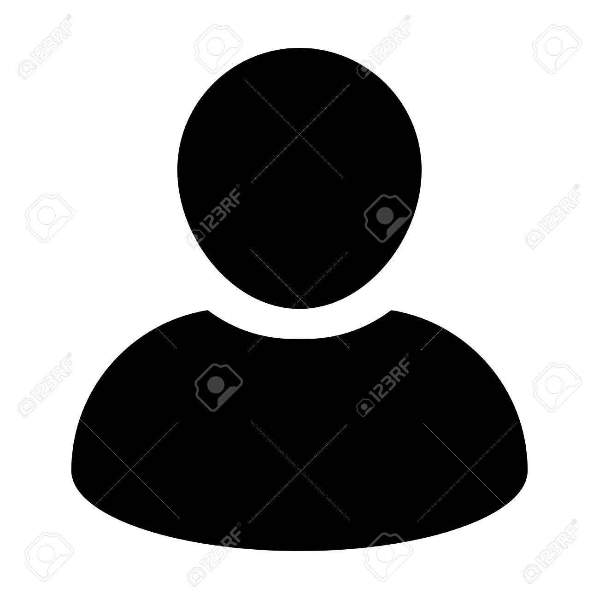

<!--
  Generated template for the ChatPage page.

  See http://ionicframework.com/docs/components/#navigation for more info on
  Ionic pages and navigation.
-->
<ion-header>

  <ion-navbar class="nvb" color="yellowdark">
    <ion-title>{{teaching.name}}</ion-title>

      <ion-buttons end="">
        <button ion-button icon-only (click)="presentPopover($event)"><ion-icon name="more"></ion-icon></button>
      </ion-buttons>

  </ion-navbar>


</ion-header>

<ion-content>
  <div class="message-wrap" *ngIf="message.length !=0">

    <div *ngFor="let m of message; let i = index"
         class="message"
         [class.right]=" m.emailSender === user.email "
         [class.left]=" m.emailSender != user.email ">
      
      <div class="msg-detail" *ngIf="m.type==0 || m.emailReceiver == user.email || m.emailSender == user.email">
        <div class="msg-info" *ngIf="infoData != null">
          <p>
            {{m.nameSender}}&nbsp;&nbsp;&nbsp; {{infoData[i]}}&nbsp;</p>
        </div>
        <div class="msg-content" *ngIf="m.type==0 || m.emailReceiver == user.email || m.emailSender == user.email" >
          <span class="triangle"></span>
          <p class="line-breaker ">{{m.msg}}</p><p class="private" *ngIf="m.type==1">Privato</p>
        </div>
      </div>
    </div>

  </div>
</ion-content>

<ion-footer no-border>
  <div class="input-wrap">
    <textarea #chat_input
              placeholder="Text Input"
              [(ngModel)]="msg"
              (keyup.enter)="sendMsg()"
              (focusin)="onFocus()">
    </textarea>

    <button ion-button clear icon-only item-right (click)="sendMessage()">
      <ion-icon name="ios-send" ios="ios-send" md="md-send"></ion-icon>
    </button>
  </div>
</ion-footer>
